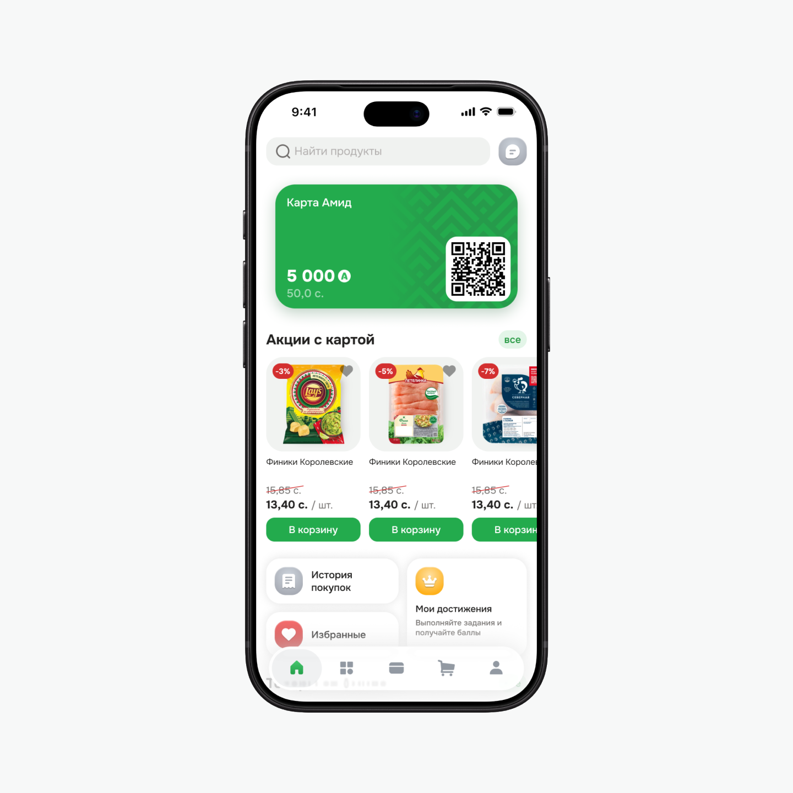
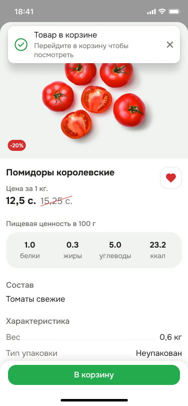
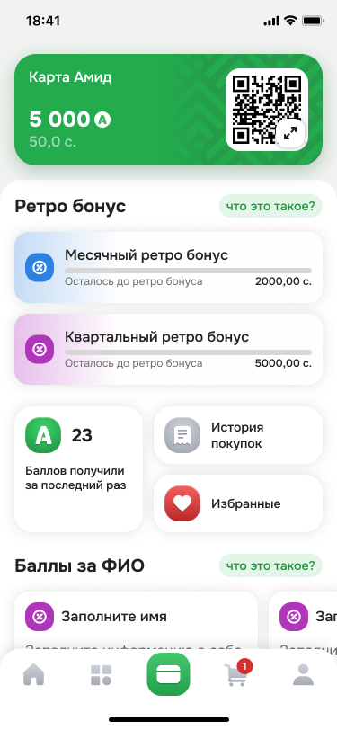
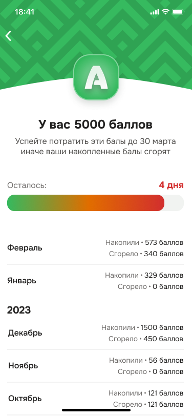
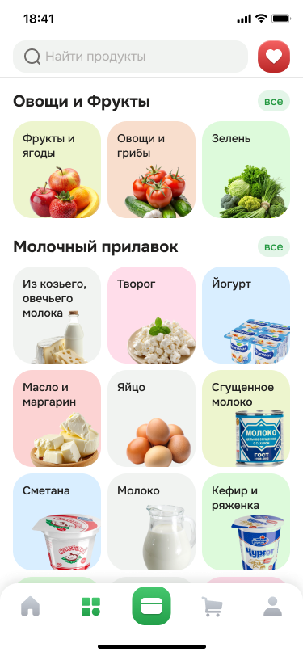

Amid — grocery shopping and loyalty
We redesigned the mobile app for Amid, a supermarket chain in Khujand. The concept brings together grocery delivery and a loyalty card for in-store shopping. My particular focus was the loyalty program: I developed its mechanics from scratch and worked out how to show shoppers the conditions, rewards, and their progress.

The brief and my role
Amid commissioned our team to redesign its app. We needed to develop the visual concept and the main flows: finding a product, building a basket, arranging delivery, and using the loyalty card.
I helped develop the overall visual concept with the team. I independently conducted the competitor analysis, designed the loyalty mechanics, and generated category imagery in Midjourney. The client had no established rules for earning points, so I developed that part from scratch.
Competitor analysis
I collected screenshots and reviewed Pyaterochka, Lenta, VkusVill, Diksi, Magnit, and other grocery services. I compared navigation, catalog structure, product details, and how each app presents its loyalty program. I looked at how shoppers move between buying products and using rewards, and what information they see at each step.
VkusVill informed the dedicated card section, while Pyaterochka’s catalog provided a reference for grouping products. In our concept, the loyalty card has its own screen and a prominent place in the bottom navigation. We organized the catalog into categories and subcategories, placing purchase and reward conditions beside the relevant actions.
The shopping flow
We mapped the app structure and user flow, from the home screen and search to payment and receiving an order. The flow includes registration, an empty basket, no search results, payment errors, and delivery tracking.
Shoppers can switch between subcategories and add products directly from the list. Product details open in a bottom sheet with a photo, unit price, ingredients, and nutrition. Products sold by weight have a quantity selector; other products can offer volume and pack-size options.
The basket shows delivery conditions and cost before checkout. At payment, shoppers can choose a payment method and whether to use points. After placing an order, they can track its delivery status and return to it from the home screen.

The loyalty card
I designed the card mechanics around presenting it at checkout, checking the balance, and understanding how to earn more rewards. In the concept, the QR code and balance sit at the top of the screen. Shoppers can enlarge the code or show the card number if scanning fails.
Monthly and quarterly bonus rewards are tied to purchase totals over each period. Separate screens explain the conditions and show progress, so shoppers can see the target and what remains before earning the reward. Purchase history and favorites are also accessible from the card screen.

Points and challenges
In the proposed system, the store chooses how many points to award for each product. This gives it a way to promote selected items through additional rewards. Shoppers see the offer, the points available, and its end date.
For gamification, I proposed challenges such as completing a profile or buying products from a selected list. Some require one action; others involve several. The screen shows the conditions and progress, with completed items distinguished from those remaining. Shoppers can open a product’s details directly from the challenge.
Points expiry
I designed a separate screen for accumulated points and their expiry. It shows the balance, expiry date, and days remaining. A colored bar emphasizes the approaching deadline, helping shoppers use their rewards in time.
Below, a monthly history shows how many points were earned and how many expired. This gives shoppers context for the current balance and what has happened to their rewards.

Category imagery
I generated product imagery for catalog categories in Midjourney. For fruit, vegetables, and other categories, I aimed for realistic images that help shoppers recognize what a section contains. In the final interface, they appear on colored tiles beside the category names.

The outcome
We prepared the visual concept, app structure, user flows, and final mockups. The client approved and accepted the work, and we handed the design over to the development team.
The loyalty program and challenges were designed to encourage repeat purchases and promote selected products. Their effect on purchase frequency and revenue was not measured as part of our work.